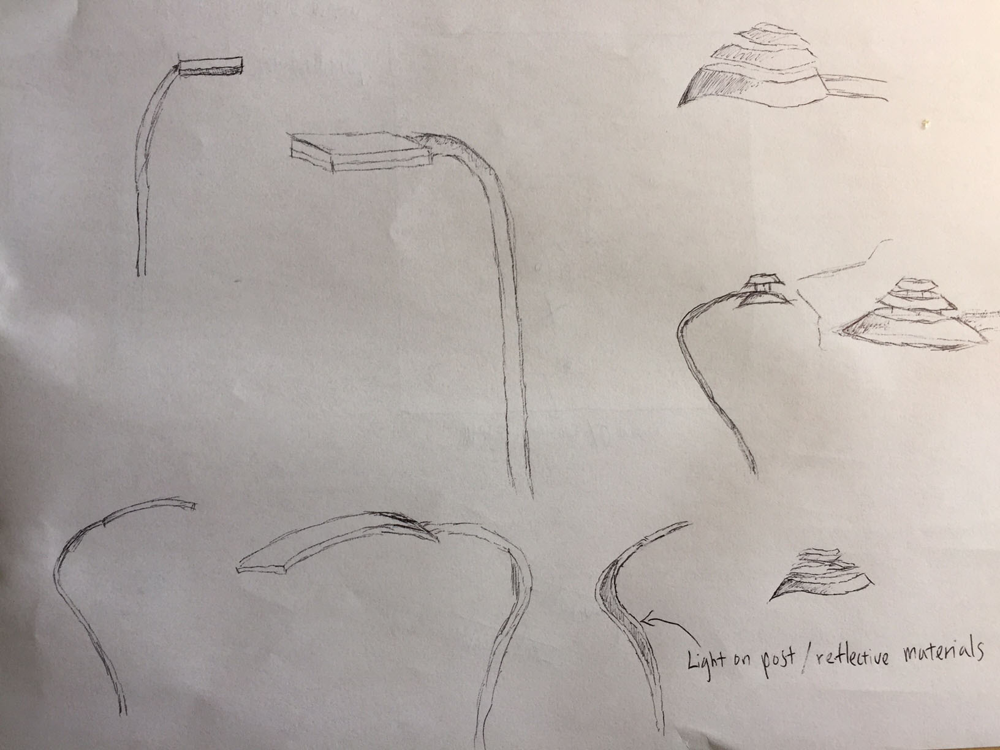
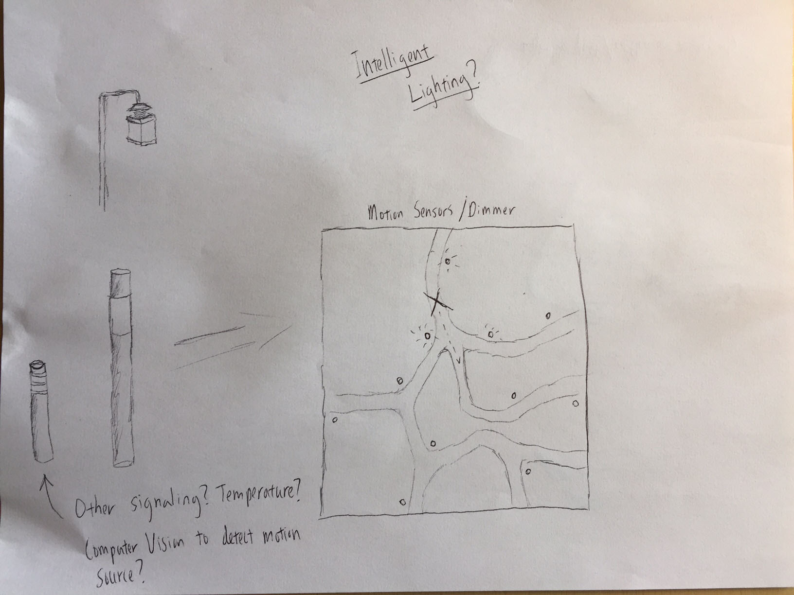
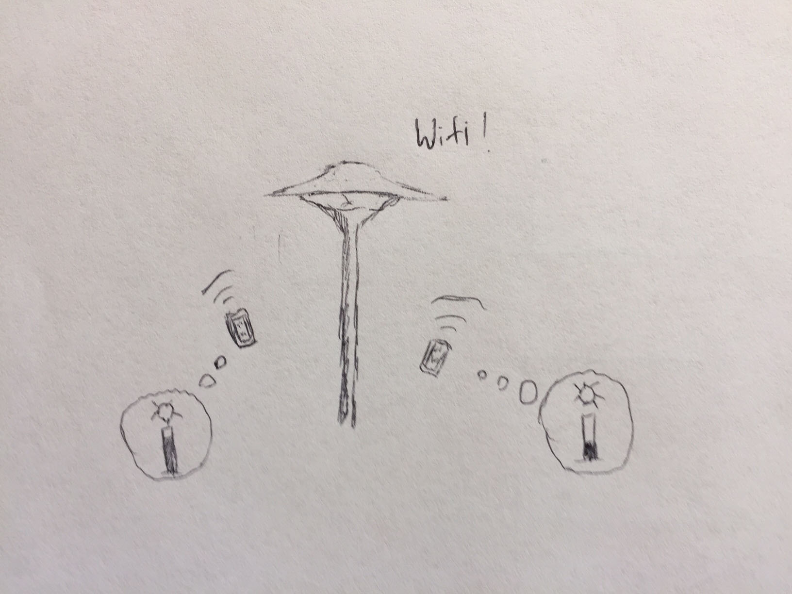
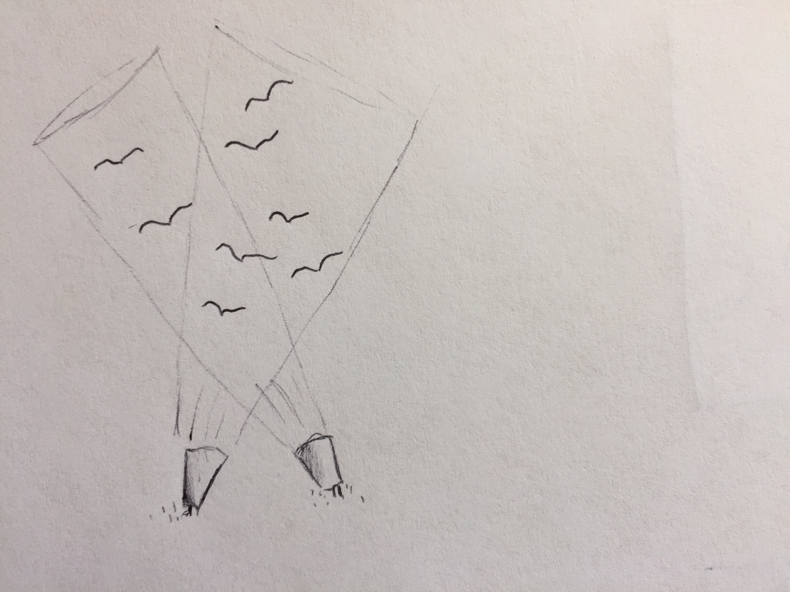
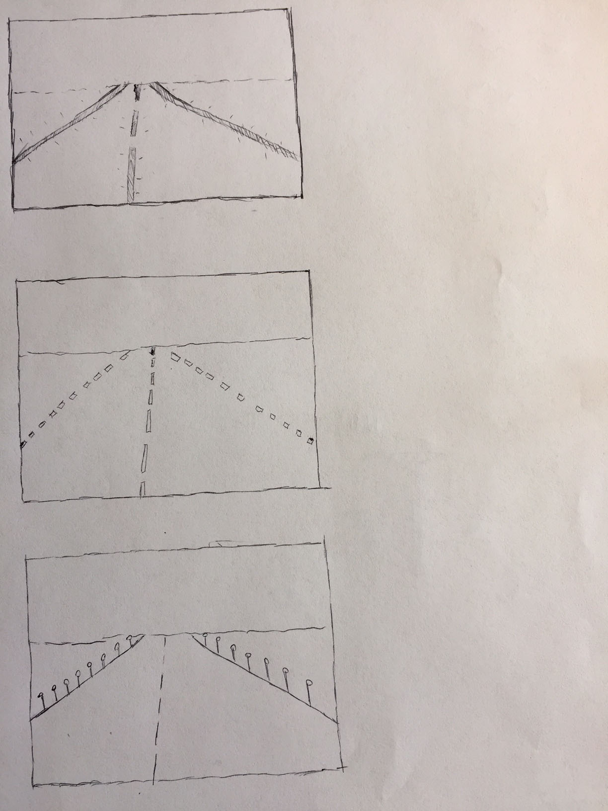

Light pollution has become an increasingly dangerous and harmful byproduct of urbanized society. The pollution comes in a few popular forms. Skyglow is when light from the ground is reflected (or directly shined) towards the sky, causing a faint glow of light during nighttime. Light trespass describes a scenario where unwanted light from one person’s property seeps into the property or personal space of another. Lastly, light glare is when luminaires at night becomes so bright that impede the vision of those looking directly into them. All three contribute to environmental damage, adverse health effects, and further emphasize excess human energy consumption.
This week’s assignment involved various sketches of ideas to combat light pollution and with a secondary consideration for energy and environmental conservation.
Modern Streetlight

Streetlight Sketches
Streetlights suffer an array of problems and are a primary cause of skyglow, light trespass, and glare. A light that shines vertically, thus sending light directly into the sky is one of the most common, and major contributors to skyglow. The baselight design model should be one that places light only where it is meant to be, the space it’s meant to brighten. Secondly, trespass and glare can be an annoyance for lights where a pedestrian or vehicle operator can directly look into the bulb. Modern streetlight design focused on eliminating light pollution thus use a “full cutoff” design; this is one where the shape of the light “hood” covers the entire bulb, as viewed from a horizontal plane. This design also gives the designer more control of light direction, as the hood can more easily concentrate the direction and spread of the beam.
These sketches illustrate a modern, light pollution-sensitive approach to streetlight design. All the lights shine their beams directly towards the ground, with no exposure to the sides (preventing glare), nor any light pointing upwards (preventing skyglow). One criticism of full-cutoff design is it’s lack of aesthetics, especially in regards to how the user is unable to see the source of their ground lighting. These light designs aim to alleviate that problem, by either having small openings at the top of the lamp to give off a faint light, or building a long led strip into the light poles themselves.
Intelligent Pedestrian Lighting Systems

Diagrams/Ideas for intelligent lighting
In pedestrian-friendly areas with low activity at night, often times light-based sensors (reacting to the amount of sunlight outside) fail to address wastefulness when there are no pedestrians around the area. An intelligent lighting system aims to solve this problem with a variety of potential approaches. The most basic idea is to use motion sensors that react to its environment, along with a timer that will dim the lights when no motion activity is detected. Besides measuring light intensity as a whole, sensors have the benefit of being able to light up one part of the light arrangement more/less depending on the proximity of pedestrians in the area.
Depending on infrastructure considerations, another approach would be to use a predictive model to decide light activity during different times of the day. This approach would lack the immediacy that a motion sensor would give, but given enough data one could build a regression/neural network etc. to get similar effects in light savings. This approach may also work better in more heavily trafficked areas, where individual motion sensors cannot detect (and thus change lighting status) based on total population volume in an area.
Intelligent lighting systems with Human Input

Phone to Light Communication
Besides preventing pollution, an intelligent light system can aim to go one step further by integrating individual experience, and user feedback into pedestrian lighting design. In areas where traffic is low, both outdoor and indoor, individuals can use their phones or another device to automatically set preferences for lighting brightness, temperature, etc., and an intelligent system can detect people within proximity of the lights to automatically register those preferences. When multiple individuals are in a space, the system can use an algorithm dependent on the space usage (average brightness, median brightness, brighter as more people enter the space etc.) to decide how to accommodate the group.
Light Systems designed to ward off/avoid Migratory Birds

Birds trapped in searchlights
One major environmental concern with light pollution is it’s disturbance of natural behavior of wildlife, particularly those of birds that often become attracted to brightly lit areas during night. Birds also use stars as a way of migratory navigation, which is particularly susceptible to effects of skyglow. Lights pointed upwards, such as searchlights, can be especially dangerous, as birds will continuously circle the lights until exhaustion. Modern science has a number of ways where lights can be designed with migration in mind. Organizations like FLAP track migratory bird data, and lights can be built with a predictive algorithm in mind to shine more dimly, change the wavelength, strobe, or otherwise engage in a multitude of effects to avoid and prevent birds from being attracted to individual lights. These systems can also attempt to lower total city light volume at night during migratory periods, based on motion sensors, computer vision, and general predictive algorithms.
Intelligent Roads

Intelligent Roads
As streetlights continue to come to the foreground of debate for how their designs affect light pollution, there’s an increasing demand to think differently about how to light up streets away from the streetlight paradigm. One idea would be to light roads from the ground up, rather than through streetlights. Though the lights end up pointing towards the sky, it may be possible to use a dimmer light, in combination with retroreflective material, and other glow-in the-dark methods. Beyond the light saving potential, roads with lights on the ground can also convey valuable information, such as temperature and road conditions.